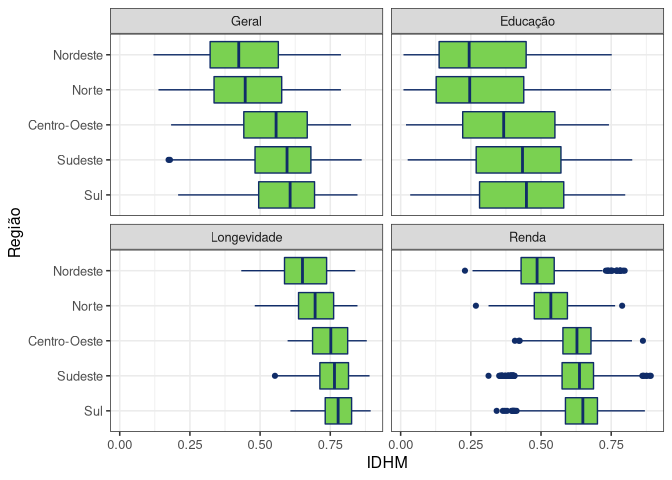

Overview
This package contains a set of databases frequently used by ABJ.
The data included comes from the Human Development Index of the municipalities, collected from the Human Development Atlas and cartographic databases.
The purpose of the package is to make databases available for quick use in other projects and as a resource for the Jurimetrics book.
Installation
install.packages("abjData")
## dev version
# remotes::install_github("abjur/abjData")Available datasets
| Dataset | Description |
|---|---|
assuntos |
Data that contains information about case types. |
cadmun |
(LEGACY) A dataset that contains the municipality codes. |
muni |
Useful data from municipalities to join with other databases. |
pnud_muni |
A dataset containing UNDP information from municipalities by years. |
pnud_min |
Minimal base of UNDP municipalities to make quick studies. |
pnud_siglas |
A dataset that serves as a glossary of available acronyms. |
pnud_uf |
A dataset that contains information about UNDP of Federative Units. |
leiloes |
Auctions dataset used in our book. |
consumo |
Consumer cases dataset used in our book. |
How to use
Once installed, just load the package and call the dataset you want to use.
The abjData package can be loaded like any other R package:
glimpse(pnud_siglas)
#> Rows: 8
#> Columns: 4
#> $ sigla <chr> "espvida", "gini", "rdpc", "pop", "idhm", "idhm_e", "idhm_l…
#> $ nome_curto <chr> "Esperança de vida ao nascer", "Índice de Gini", "Renda per…
#> $ nome_longo <chr> "Esperança de vida ao nascer", "Índice de Gini", "Renda per…
#> $ definicao <chr> "Número médio de anos que as pessoas deverão viver a partir…Chart examples
Municipal Human Development Index:
pnud_min |>
pivot_longer(starts_with("idhm")) |>
mutate(tipo = case_when(
name == "idhm" ~ "Geral",
name == "idhm_e" ~ "Education",
name == "idhm_l" ~ "Longevity",
name == "idhm_r" ~ "Income"
)) |>
mutate(
regiao_nm = fct_reorder(regiao_nm, value, median, .desc = TRUE),
tipo = lvls_reorder(tipo, c(2, 1, 3, 4))
) |>
ggplot() +
geom_boxplot(
aes(value, regiao_nm),
colour = "#102C68",
fill = "#7AD151"
) +
facet_wrap(~tipo) +
theme(legend.position = "none") +
theme_bw(12) +
labs(
x = "IDHM",
y = "Region"
)
Position of municipalities:
muni |>
ggplot(aes(lon, lat)) +
geom_point(size = .1, colour = viridis::viridis(2, begin = .2, end = .8)[1]) +
coord_equal() +
theme_void()
Requirements
abjData requires R version greater than or equal to 3.4.
License
abjData is licensed under the MIT License.